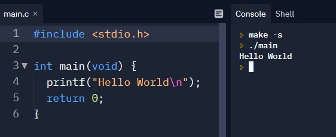
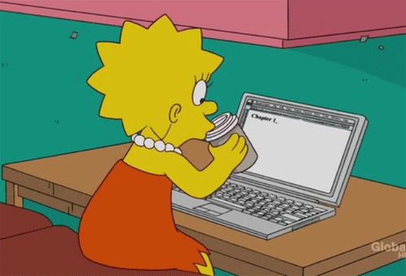

Meus primeiros códigos em C
Em 2017, eu iniciei a graduação em engenharia elétrica e logo no primeiro ano tive Lógica de Programação I. Era apenas uma aula por semana, e vou ser honesta, eu não estava entre os melhores da turma e nem tinha muita curiosidade pelo assunto, porque não era meu foco. Eu iniciei a graduação já pensando em trabalhar em outra área, mas isso não significa que eu não tentava entender o conteúdo.
Nessas aulas, além de aprender como a lógica funciona, vimos também as unidades de medida usadas na área, o basicão do Linux, porque era o sistema usado na instituição, e depois das férias de inverno começamos a estudar C, porém nada que tivesse alguma relação direta com o meu curso. Por exemplo, desenvolver um código que efetua o cálculo de corrente ou tensão em um circuito elétrico, ou explicar a matéria utilizando o desenvolvimento de um projeto com microcontroladores.
Eu nunca tinha programado na minha vida, não sabia nada sobre códigos, o que era C, Java, ou qualquer outra linguagem de programação, suas diferenças e finalidades. Porém, nunca achei o C ‘amigável’ para uma primeira linguagem e principalmente para uma turma que nunca trabalhou com programação. Sei que essa discussão vai longe, do tipo, ‘o C é uma boa peneira para filtrar os alunos’, ‘que ele é aplicado em muitas universidades do Brasil e no mundo’ e etc, mas não é o foco deste texto, e sim, de como foi o meu começo.
Já em 2018, retornamos ao C nas aulas de Lógica de Programação II. Todos os códigos estão no repositório C-Classes no meu Github, mas já adianto que não são complexos ou de conteúdo avançado. No começo, os conteúdos eram tranquilos, nada muito complicado, mas esqueci de colocar o ‘;’ ao final da linha inúmeras vezes, já 'chamei' uma variável com nome diferente, enfim, compilei muito código errado sem saber qual era o erro.

Tudo OK até aqui, já que eu estava no início desta jornada.
A maioria dos códigos que fiz são sobre operações matemáticas, por exemplo a soma de n números, qual a média, qual deles é o maior e por aí vai. Com o tempo, começamos a ver comandos, como o ‘if’, ‘else’, ‘else if’, ‘for’ e ‘while’. Mais para o final do ano letivo, quando chegou na parte do ‘swith’ e vetores, foi quando comecei a ter problemas. As aulas viraram um ambiente competitivo, em que quem resolvia a atividade mais rápido ganhava um ‘bônus’, que servia como um plus durante o fechamento do boletim para aumentar a nota de quem os recebeu. Ou seja, uma atividade era passada, o primeiro a terminar chamava o professor, que ia até o aluno verificar o código, se estivesse tudo certo, outra atividade era passada sem corrigir a anterior. A cada aula, eu ficava mais frustrada e com menos vontade de querer entender o que estava sendo passado. Como resultado, eu comecei a ter dificuldade nesta matéria, quase reprovei, terminei o ano com muita aversão a tudo relacionado à programação e com aquela sensação ‘isso não é para mim’.

Eu quis compartilhar isso, como uma forma de mostrar que existem vários começos e que nem todos serão uma história de amor à primeira vista. Refletindo sobre aquela época, vejo que toda a frustração acumulada me impediu de ver que programação não era só o que estava sendo passado, que não existia somente o C neste universo e que aquilo era só uma pequena fração de uma vasta área de possibilidades.
Mas não é com este clima de decepção que termino este post, a notícia boa é que estou em processo de migração para a área tech, felizmente, eu consegui mudar o ponto de vista que eu tinha sobre programação, mas vou falar mais sobre como isto aconteceu em outro post.
Um abraço e até lá.